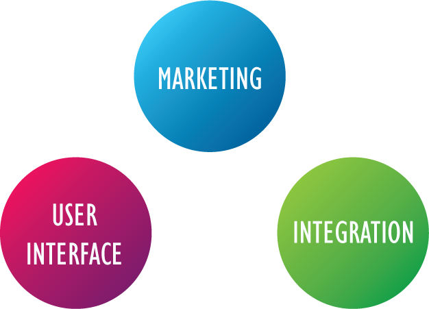
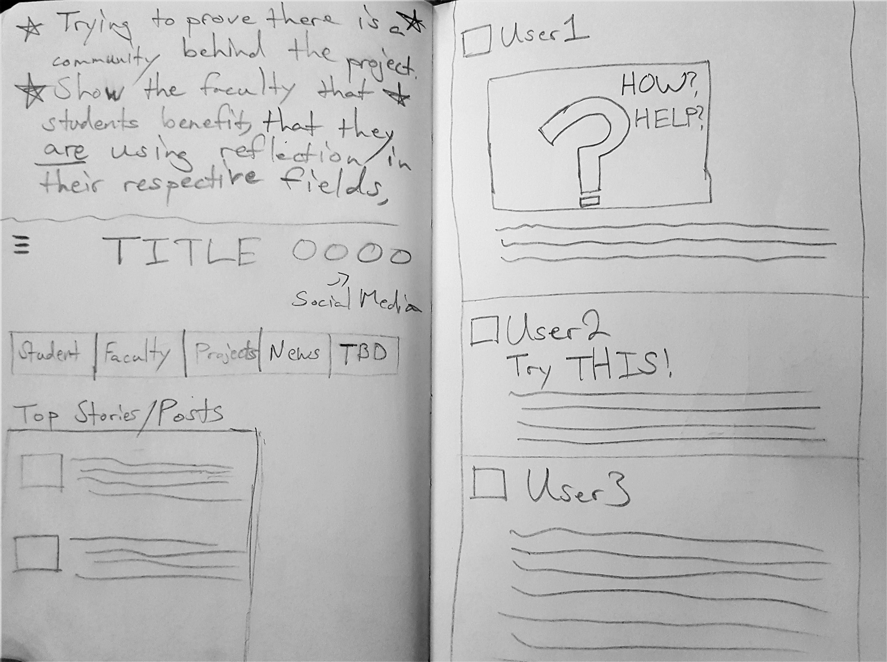
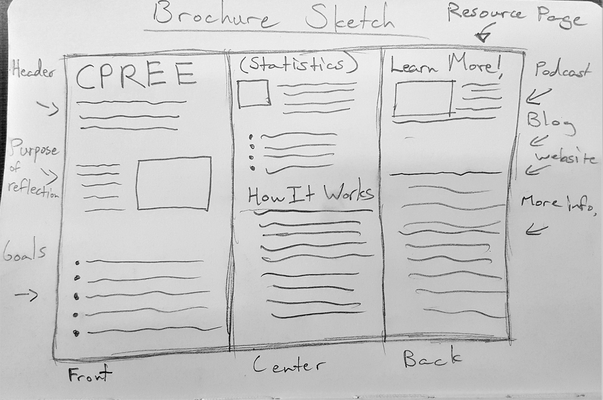
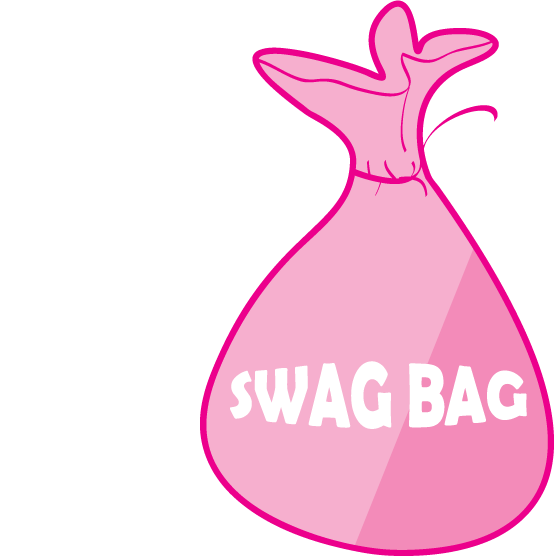
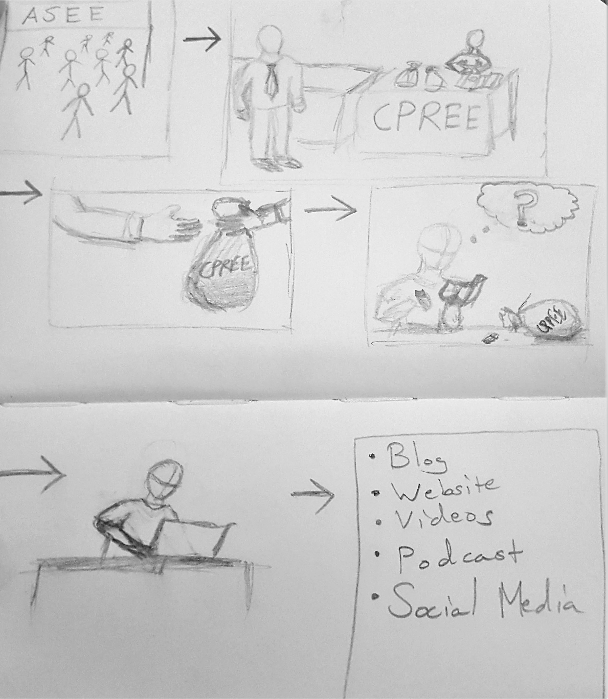

CPREE
SUMMARY
I was able to take part in a research group focused on promoting reflection in engineering education. The goal was to utilize ideation and prototyping in a short period of time to end up with a set of possible solutions. Our users were members of CPREE (the Consortium to Promote Reflection in Engineering Education). We divided the work between three groups that focused on different elements of the project.
CHOOSING ROLES
There were actually different aspects to our topic that our professors wanted to focus on. After discussion we decided to split the project into three smaller focus areas that would all help in bringing more attention to the idea of reflection in engineering disciplines. I volunteered to be a part of the marketing team where we generated ideas on how to raise awareness of the importance of reflection in engineering classrooms.
IDEATION
 Our next step was to start on the ideation process as a group. We came up with multiple ideas such as an online forumn and a brochure/flyer. We focused on sketching out our ideas using both divergent and convergent thinking.
SOLUTION
Giving out swag bags at TED talks and engineering events(in the form of string backpacks)
Storyboard: American Society for Engineering Education (ASEE) event.
The swag bag contains multiple items that act as marketing resources. Items such as business cards, brochures, and USB drives would provide information behind CPREE and on the importance of reflection in engineering education.
SWAG BAG ITEM MOCKUPS:

REFLECTION
This was my first time experiencing how the design process works and working in a research team. Joining the marketing team showed allowed me to branch away from my comfort zone and I got to experience product design without even knowing it. I was able to develop new skills in prototyping and user research. Being able to prototype a design was a truly rewarding experience and I am thankful to HCDE faculty Terri Lovins and Jennifer Turns for allowing me to be a part of the research team.